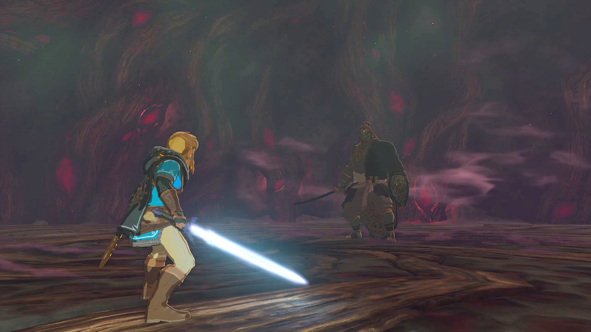
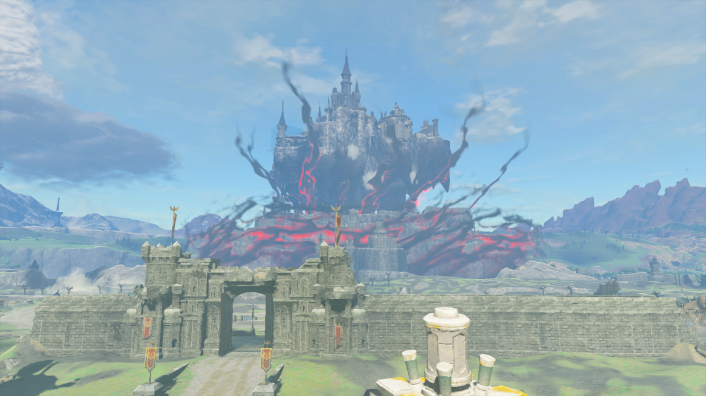

先说结论：最后一战分三段打
这是主线最后一战，分三段打：从海拉鲁城堡正下方的深穴跳入地底，穿过瘴气军团营地，五位贤者到场助战；魔王加侬多夫人形态、觉醒态依次放倒；最后乘白龙迎战黑龙（魔王龙），击破背上四处弱点、刺碎额头秘石。向阳草料理带够，瘴气攻击会锁住心心上限。
接取与奖励
| 项目 | 内容 |
|---|---|
| 接取 | 普尔亚（监视堡垒）对话后开始 |
| 前置 | 海拉鲁城堡的异变、寻找第五位贤者、丢失的勇者之剑 |
| 位置 | 海拉鲁城堡正下方地底 |
| 奖励 | 加侬多夫讨伐完成、结局动画触发 |
| 后续 | 寻找泽尔达（真结局） |
总览
| 阶段 | 内容 |
|---|---|
| 进地底 | 从城堡正下方深穴跳入，沿通道向南 |
| 瘴气军团 | 四波敌人，贤者到场，复活的 Boss 由贤者分头对付 |
| 魔王加侬多夫 | 人形态→觉醒态 |
| 黑龙 | 背上四处弱点，最后刺额头秘石 |
分步攻略
1战前准备：向阳草料理与大师之剑
瘴气攻击会锁住心心上限，只有向阳草料理能恢复被锁的心，带够几份再下去。贤者全部到齐（四位贤者加米涅露）再出发。大师之剑一定要带：最后打黑龙，只有它能伤到黑鳞。
2从城堡正下方的深穴跳入地底
海拉鲁城堡正下方有一道裂缝，跳下去，沿地底通道一路向南。路上敌人多，不用全清，赶路为主。

3穿过瘴气军团营地
沿通道向南，穿过神代遗迹、封印遗迹，来到最深处的开阔大厅。瘴气军团分四波杀到：波克布林、蜥蜴战士、吉波得、莫布林，打完一波来一波。五位贤者会在这里到场，帮你分担。随后之前打过的四座神殿 Boss 与被夺构装体复活出现，贤者们会分头对付它们，你只管往前走，单挑加侬多夫。

4魔王加侬多夫人形态
第一阶段他轮换太刀、长枪、大锤三种武器：太刀范围短，保持距离慢慢输出；长枪三连突刺，左右侧跳躲；大锤除了砸地板还有蓄力招，范围大伤害高，躲开再反击。抓他出招后的硬直打，攒出林克时间。
5分身与觉醒态
第二阶段他会召唤一群分身，用弓箭清理分身，贤者也会帮忙。打掉足够伤害、半血左右，他收回分身、击倒贤者，进入觉醒态单挑：攻击带瘴气，还会闪避你的攻击，别贪刀，等他闪避后后跳进林克时间再打。被瘴气打中会锁心上限，中了就吃向阳草料理。
6黑龙：乘白龙迎战
加侬多夫吞下秘石化身黑龙，白龙会接住林克。飞到黑龙背上，击破四处眼睛一样的脓包弱点；只有大师之剑能伤到黑鳞；瘴气火会锁心，掉下去白龙会接住你；四处弱点全破后血月升起，额头秘石显现，飞过去用大师之剑刺碎秘石。

关键信息
| 项目 | 内容 |
|---|---|
| 任务类型 | 主线任务，第 22 篇 |
| 给予人 | 普尔亚（监视堡垒） |
| 前置任务 | 海拉鲁城堡的异变、寻找第五位贤者、丢失的勇者之剑 |
| 关键地点 | 海拉鲁城堡地底、神代遗迹、封印遗迹 |
| 关键道具 | 向阳草料理、大师之剑、弓箭 |
| 关键数字 | 瘴气军团四波、黑龙背上四处弱点 |
容易翻车的地方
- 不带向阳草料理就下去：瘴气攻击锁心上限，越打血越少，带够再进。
- 军团战里恋战：四波敌人加复活的 Boss，不用全清，贤者会分担，往前走才是正事。
- 觉醒态贪刀：他会闪避攻击，等他闪避后后跳进林克时间再输出。
- 掉下黑龙背就慌：掉下去白龙会接住你，再飞上去继续打。
一句话总结
带够向阳草料理、带上大师之剑，从城堡地底一路杀穿瘴气军团，魔王人形态、觉醒态依次放倒，最后乘白龙刺碎黑龙额头的秘石——主线最后一战就此打完，下一站就是寻找泽尔达。